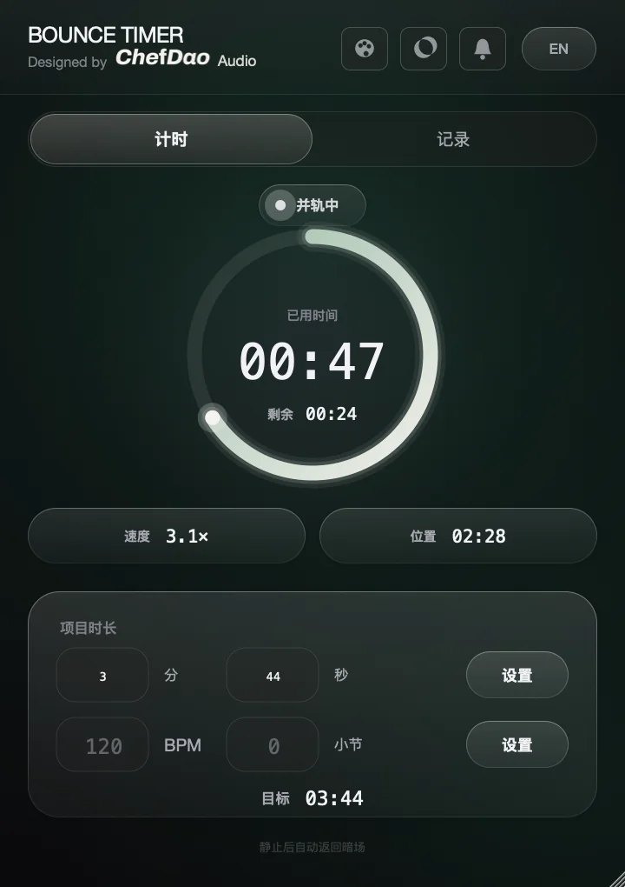
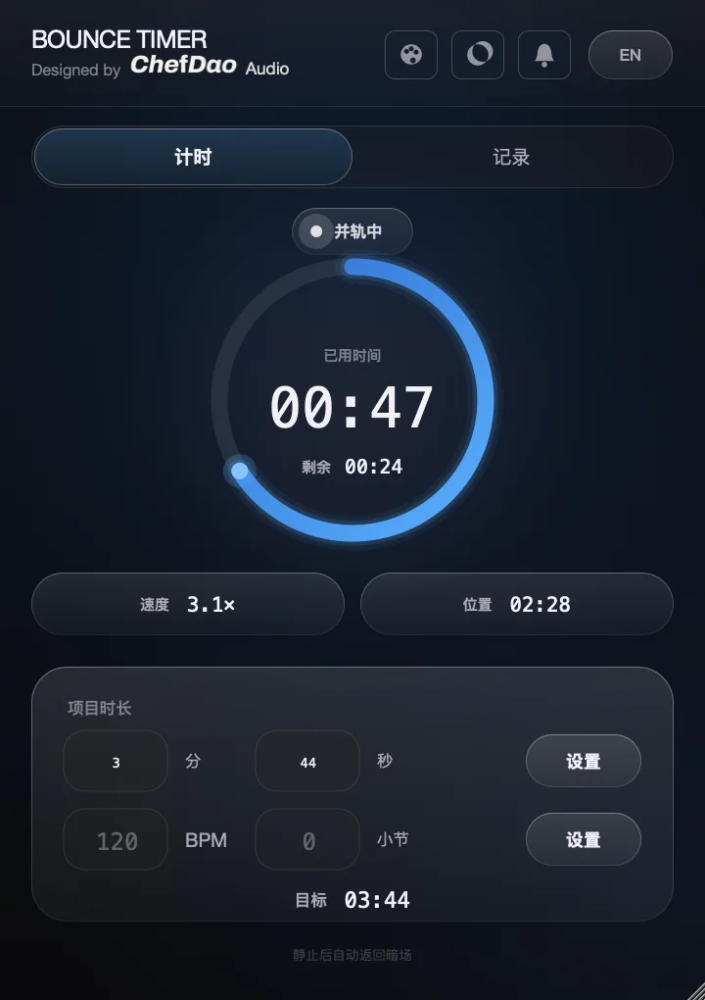
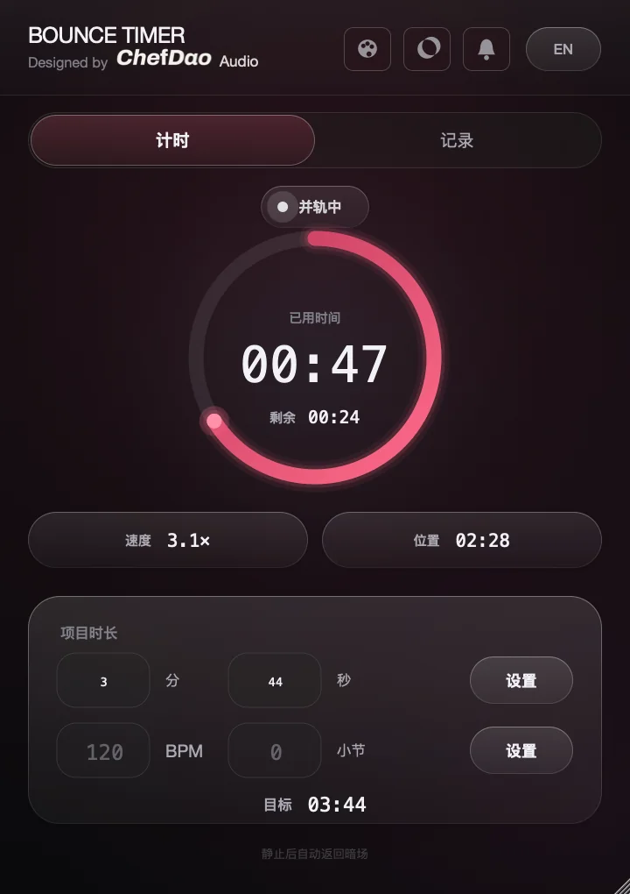
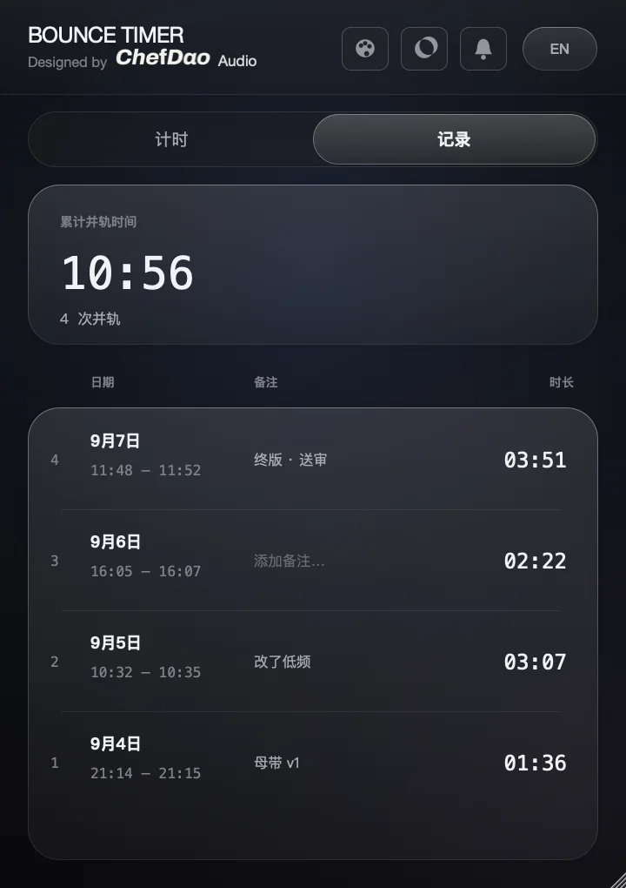

并轨还要多久？挂上就知道。
一个给 Logic Pro 用的免费并轨计时插件 —— 实时显示已用时间、剩余时间、渲染倍速，
还能在并轨时把整个屏幕暗下来，只留一个进度环。
先说客观原因：Logic 只告诉你「在跑」，不告诉你还剩多久。同样 4 分钟的歌，插件少的时候 40 秒完事，堆满模拟建模和卷积混响能磨五分钟 —— 歌的长度根本预测不了并轨的长度。
再说真实原因。我有 ADHD，并轨的时候我基本是盯着屏幕看到它结束。不是我需要盯，是一走开就开始不确定：它还在跑吗？会不会中途报错？我会不会干着干着就忘了回来？
最耗注意力的从来不是等待本身，是这种不确定 —— 那件没做完的事会一直占着一块脑子，干什么都干不进去，所以干脆什么都不干，就在这儿守着。
我需要的不是「耐心一点」，是一个明确的数字。「还剩 24 秒」比任何时间管理技巧都管用，因为它把不确定直接消掉了。全屏专注那个功能就是顺着这个想法做的：把进度变成一个环，剩下的屏幕全关掉，然后你就敢走开了。
这插件是先给我自己做的。如果你也是那种不敢走开的人，它可能不只是帮你省时间。
双击下载好的 BounceTimer-1.0.0.dmg，把左边的插件图标拖到右边的 Components 文件夹上。
系统会要求输入开机密码 —— 因为要写进系统目录，正常现象。
打开「终端」App（聚焦搜索 Terminal），把下面这一整行粘贴进去，回车。没有任何输出就是成功了。
xattr -dr com.apple.quarantine /Library/Audio/Plug-Ins/Components/BounceTimer.component
macOS 会给所有从网上下载的文件盖一个「隔离」标记。做了 Apple 付费签名（99 美元一年）的插件可以免这一步，
这个插件是免费开源的，所以要你自己动一下手。
这行命令只是把那个标记删掉，不会改动插件本身。
Logic 会重新扫描插件，第一次可能要等十几秒。
然后把 BounceTimer 挂在「立体声输出 / Stereo Out」通道条的音频 FX 上，放最后一格最省事。
知道分秒就填「分 / 秒」；只知道速度和小节，就填「BPM / 小节」。工程长度在 Logic 的：文件 › 工程设置 › 通用 › 工程结束。
插件会实时显示已用时间、剩余时间、渲染倍速，和当前渲染到哪一秒。
打开「全屏专注」，并轨时整个屏幕会暗下来只留一个进度环。点一下可以隐藏，鼠标静止 10 秒会自动淡回来，并轨全程不受影响。
并轨结束会响一声。历史记录页会记下每一次并轨的时间和时长，还能加备注。




刀大厨 · 湛蓝 · 蔷薇 · 历史记录页（另有石墨、紫罗兰、落日、青柠、湖蓝）
xattr 命令，再完全退出 Logic 重开。auval -v aufx Bntm Chef，最后显示 AU VALIDATION SUCCEEDED 就说明插件本身没问题，那就是 Logic 的插件缓存问题，重启一次电脑。